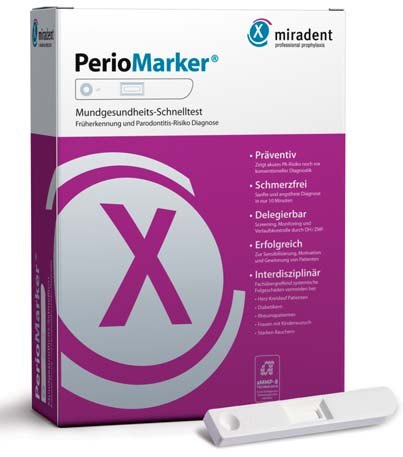
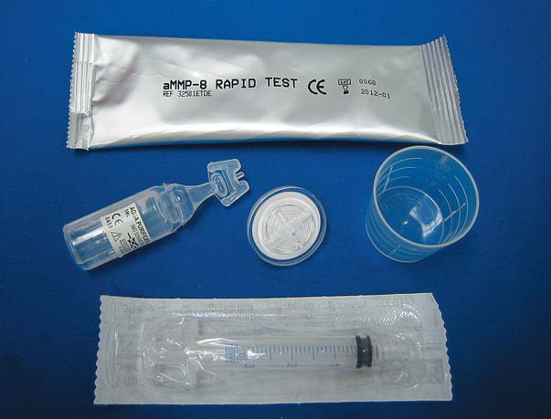
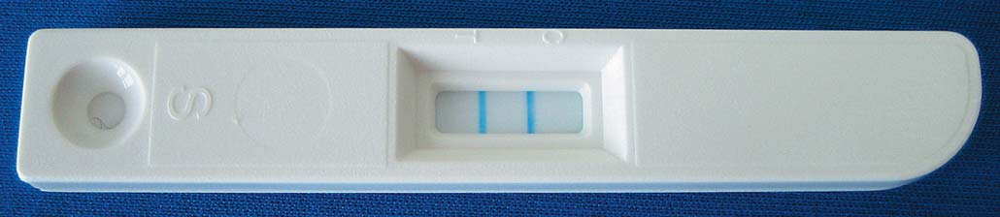
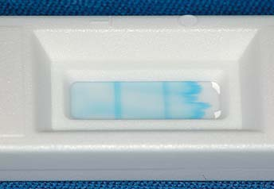
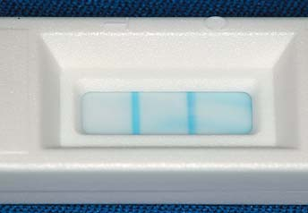
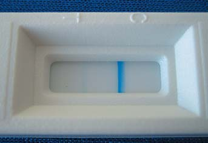

Практичні курси · журнал «ДентАрт» 2015 №3
Експрес-тест для визначення гострої деградації тканини
EXPRESS TEST FOR ACUTE TISSUE DEGRADATION
У межах пародонтальної профілактики і подальшого лікування періодичне призначення і правильна інтерпретація результатів експрес-тесту можуть надати дуже цінну інформацію, яка сприятиме раціональній оцінці як фактичного стану тканин крайового періодонту, так і очікуваної ситуації.
Якісний доказ виявлення ендогенних протеїназ, таких, як, наприклад, активна матриксна металопротеїназа-8 (аMMP-8), достовірно вказує на обумовлені імунозапальні процеси деградації твердих і м'яких тканин людського тіла. Подібний метод скринінгу, що провадиться прямо в стоматологічному кріслі, на ферменті коллагеназа-2, пропонує експрес-тест ПеріоМаркер/PerioMarker фірми Хагер Веркен/Hager&Werken.
Біохімічна основа
Біохімічні аналізи рідин організму дають сьогодні точну й змістовну, нерідко навіть життєво необхідну медичну інформацію, і в загальній медицині кожен третій діагноз ставиться лише після проведення таких досліджень. Але у стоматології справи сьогодні ще йдуть зовсім по-іншому, і тим важливіший той факт, що завдяки експрес-тесту стає можливим якісне визначення важливого біомаркера, а саме активної матриксної металопротеїнази-8 — ендогенного ферменту, що розщеплює колаген і називається відповідно до іншої біохімічної класифікації коллагеназа-2. Ця ендопротеїназа в межах загальних імунозапальних процесів, особливо з пародонтологічної точки зору, має для скринінгу велике значення, оскільки вона відповідає за незворотні процеси деградації твердих і м'яких тканин крайового пародонту.
Клінічне значення експрес-тесту аMMP-8
Коллагеназа-2, або аMMP-8, яка з'являється в результаті імунної відповіді організму на травмуючий бактеріальний вплив у постраждалих тканинах і рідинах, сьогодні може бути легко виявлена в них за допомогою відповідних методів. На підставі цілої низки клінічних досліджень і останнього, опублікованого у 2008 році дослідження Елерса/Ehlers і співавт. та публікації Нетушил/Netuschil і співавт. у 2012 році можна констатувати, що виставлений відповідним чином поріг експрес-тесту зі значенням 25 нг/мл достовірно клінічно демонструє критично розподілену концентрацію аMMP-8. Слід зазначити, що згадане дослідження засноване на лабораторних дослідах, і, отже, немає можливості безпосереднього рівнозначного порівняння з експрес-тестом ПеріоМаркер/PerioMarker. Це дослідження продемонструвало, що при обстеженнях клінічно здорових на вигляд ясен у середньому переважали концентрації аMMP-8 3 нг/мл в отриманому елюаті, хоча було досить діапазону 2-9 нг/мл. У пацієнтів з встановленим хронічним пародонтитом ці значення перебували в діапазоні 4-69 нг/мл. Середнє значення для цієї групи становило близько 11,5 нг/мл. У контексті цього дослідження для стоматологічної профілактики і терапії було встановлено відносно високі результати в групі пацієнток з гінгівітом вагітних (значення від 6 до 200 нг/мл).
Це демонструє значущість результатів експрес-тесту, оскільки завдяки визначенню наявних деструктивних значень аMMP-8 разом з проявами в клінічній картині і параметрами первинного огляду можуть бути визначені прогнози подальшої пародонтальної деградації тканин. Так, уже Ментила/Mantyla і співавт. 2006 року змогли довести, що, наприклад, у курців підвищені значення аMMP-8 показали поганий прогноз у плані гіршої відповіді на ПСП. Це також підтвердилося і у згаданому вище недавньому дослідженні експрес-тесту професора Гоффмана/Hoffmann. У цьому дослідженні пацієнти з підвищеними значеннями аMMP-8 до терапії мали, як правило, гірші результати і після терапії. Copca/Sorsa і співавт. у 2010 році довели, що після терапії у стабільних ділянках значення аMMP-8 тривалий час залишаються на низькому рівні, в той час як значення аMMP-8 в нестабільних ділянках знову дуже швидко зростають. У цьому плані визначення аMMP-8 може допомогти стоматологові контролювати успіх терапії у загальній структурі клінічної картини. Також Рейнгард/Reinhard і співавт. у 2010 році дійшли висновку, що біомаркер аMMP-8 може допомогти визначити пацієнтів з підвищеним ризиком прогресуючого деструктивного захворювання тканин крайового пародонту.


Фото 1 а, б. Усе необхідне для раннього виявлення активного запалення пародонту. Всі компоненти системи: тест-касета, яка міститься в захисній оболонці, безпосередньо перед використанням (угорі), флакон з миючим розчином (посередині ліворуч), фільтр (у центрі), мірна скляночка (у центрі праворуч) і стерильна упаковка шприца (нижче). Завдяки простоті необхідних допоміжних засобів і винятково простій процедурі, їх простому застосуванню проведення тестів можливе без складнощів протягом близько десяти хвилин прямо в стоматологічному кріслі і може бути доручене без проблем навіть асистентам.
Практичне значення результатів для профілактики і терапії
У автора, котрий має майже трирічний практичний досвід роботи з використанням експрес-тесту для скринінгу в загальній стоматологічній практиці, є деякі суттєві зауваження для доцільного та цільового використання цього тесту. З цієї тематики вони доповнюються постійно для практичного задоволення вимог учасників лекцій та курсів автора.
ПеріоМаркер/PerioMarker є скринінговим експрес-тестом. Проведений безпосередньо в кріслі, тест є загальним аналізом пародонтальної ситуації всієї порожнини рота пацієнта. За допомогою полоскання рота у вигляді проби методом підсумовування визначається сумарна концентрація аMMP-8, яка елюрується як з крайового вмісту природних зубних альвеол, так і навколо імплантатів. Якщо у порожнині рота є імплантати, при аналізі необхідно звернути увагу на допустимо низьке значення концентрації сульфокислоти природної ясенної борозни. Для правдивого аналізу потрібна певна кількість зубів, що залишилися, принаймні дванадцять. На цей фактор слід звертати увагу особливо тоді, коли тест показує позитивний результат в імовірно здорових пародонтальних умовах. Таким чином, за певних обставин незначна зміна тест-смужки (поява синього кольору) уже вказує на підвищений ризик колагенозу. Також на цей фактор потрібно звернути увагу тоді, коли при явних клінічних проявах запаленого пародонту або запалення навколо імплантатів тест показує негативний результат (тобто відсутність синього кольору на тест-смужці). В обох випадках експрес-тест не дає помилкового твердження, а, що більш імовірно, вказує на необхідність подальшого вивчення можливого переважання значень аMMP-8 локально в аналізованій ділянці крайового пародонту або слизової оболонки навколо імплантата. Скринінг-тест з біохімічним тестово-технічним встановленим пороговим значенням (у цьому випадку 25 нг/мл) не може діяти по-іншому. При проведенні цього тесту за великих значень можна відзначити, що поява синього забарвлення на тест-смужці в тестованому місці експрес-тесту може сильно відрізнятися від загальних значень. Таким чином, при мінімальному синьому або блакитному забарвлюванні тест-смужки при загальному аналізі більш інтенсивний колір можна виявити для порівняння та уточнення тесту контрольної смужки в місці тестування. Так, слабко забарвлені тестові лінії показують після запиту у виробника діапазон значень від 25 до 50 нг/мл (aMMP-8 у фільтраті), сильніші тестові лінії — діапазон від 40 нг/мл. Якщо є локально отриманий доказ значення аMMP-8 якоїсь конкретної пародонтальної кишені, то необхідний локальний забір проби прямо з ясенної борозни або навколо імплантата. Для такого виду локального тесту зубоясенної кишені або періімплантиту може бути також використаний у вигляді експрес-тесту пропонований фірмою Мірадент/Miradent імплантатний маркер.

Фото 2. Використовувана для визначення значень aMMP-8 тестова касета. Слід зазначити, що тестова смужка (Т) (у тестовому полі ліворуч) у ситуації з цим пацієнтом після запропонованих п'яти хвилин очікування більше забарвлена у синій колір, ніж контрольна смужка (С) праворуч. Це свідчить про дуже високу концентрацію аMMP-8. Проведення тесту слини для пацієнта — абсолютно безболісна «дитяча гра». Безпосередньо перед тестом не можна нічого їсти або пити, чистити зуби.
Тестування за допомогою ПеріоМаркер — це не «періодонтит-тест». Експрес-тест ПеріоМаркер не є тестом для виявлення і визначення факту «періодонтиту». Для клінічних знань, документації або навіть класифікації запалень крайового пародонту існують уже визнані і перевірені методи, такі, як, наприклад, тест кровотечі при зондуванні за Aйнамо/Ainamo і Бей/Bay від 1975 року, індекс гінгівіту за Лое/Loe і Сілнесом/Silness від 1967 року, індекс кровоточивості ясенної борозни за Мюлеманном/Muhlemann і сином від 1971 року або інтегровані в PSI (пародонтальний скринінг-індекс) з ААР і ADA від 1992 року. Ці методи відображають клінічну картину і визначають прояв явного гінгівіту або пародонтиту.
Експрес-тест використовується для визначення ризику прогресуючих деструктивних процесів деградації у крайовому пародонті. Обговорюваний тут експрес-тест — дуже корисний інструмент для першої, орієнтовної оцінки активних руйнувань при запаленні у крайовому пародонті або періімплантитах чи при втраті кісткової тканини, які є результатом очевидної імунозапальної реакції під час клінічного обстеження. Тест демонструє пацієнтові ризик виникнення прогресуючої деструкції пародонтального апарату. Так, у 2010 році Copca/Sorsa і співавт. змогли довести, що після терапії стійких до запалення пародонтальних місць значення аMMP-8 залишаються низькими, в той час як значення аMMP-8 в нестабільних місцях зростали дуже швидко. Не менш показовим для оцінки очікуваного успіху або невдачі пародонтальної терапії є те, що попередні дослідження клінічного значення aMMP-8 у пародонтальних кишенях дають можливість розпізнати прогноз успішності лікування. Чим вищі початкові значення аMMP-8, тим більше утруднене лікування. Констатується, що це однаковою мірою стосується отримання значень як за допомогою скринінгового методу, так і за допомогою місцевої одиночної проби. Також з урахуванням «першого імплантологічного імперативу» реалізацію експрес-тесту аMMP-8 можна абсолютно виправдано класифікувати. Ці дані доводять, що при активному пародонтальному запаленні імплантація неможлива. Таким чином, якщо доведено, що існує зазначений бактеріальний імунозапальний хронічний деструктивний пародонтит з тенденцією до колагенози, то необхідно насамперед виробити й реалізувати стратегію усунення цього пародонтиту, перш ніж ризикувати введенням алопластичного чужорідного тіла з надією на просту остеоінтеграцію в альвеолярних кістках. У будь-якому випадку за позитивного результату слід обговорити і визначити з пацієнтом належну регулярну частоту повторного лікування, при цьому йому повинні бути також чітко роз'яснені можливі наслідки недотримання режиму терапії. В ідеалі, таке роз'яснення краще зробити письмово і дати на підпис пацієнтові.



Міждисциплінарний зв'язок стоматології та загальної медицини
Сьогодні вважається, що викид аMMP-8 в рамках ендогенних імунозапальних процесів є продовженням дії спеціальних імунних клітин. При цьому фермент діє, як «мачете в джунглях» (Нетушил/Netuschil), для патогенної, бактеріально ураженої сполучної тканини за імунологічно цілеспрямованої міграції, особливо для поліморфноядерних гранулоцитів, макрофагів і остеокластів. Якщо деградація інфікованої тканини, спровокована запаленням, має місце за фізіологічної рівноваги з можливістю регенеративного відновлення клітин організму, то в найближчому майбутньому почнеться зцілення. Якщо цей процес розбалансований через надмірні фактори деградації, такі як, наприклад, активна коллагеназа-2, або аMMP-8, то через надмірну деструкцію тканин відкриються ворота загального кровообігу в здоровій тканині.
Цей ефект повною мірою стосується всіх пародонтальних тканинних структур. Якщо подумки уявити собі, що вся площа внутрішньої поверхні альвеол усіх зубів відповідає поверхні долоні дорослої людини, то стає зрозуміло, наскільки широко може бути відкрита дорога в кровообіг багатьом патогенним бактеріям, і особливо анаеробам, таким як porphyromonаs gingivalis.
Вплив на пародонтальний запальний процес проблемної імунної системи, активованої різними системними хворобами, такими, як діабет, ревматоїдний артрит або навіть інфаркт та інсульт, в наш час незаперечний. Так, наприклад, деструкція кістки у хворих на діабет відбувається швидше, ніж у людей, які не страждають цим захворюванням. У зв'язку з цим варто зазначити, що систематична пародонтальна терапія може сприяти поліпшенню діабетичного рівня крові постраждалих. На цьому тлі навіть професійні терапевтичні та пародонтальні спільноти вимагають міждисциплінарної діагностичної взаємодії стоматології та загальної медицини. Завдяки експрес-тесту є можливість використовувати ще один засіб діагностики, який можна розглядати як сполучну ланку діагностичних стоматологічних і терапевтичних заходів. Цей тест може безпосередньо продемонструвати, чи відкритий прохід у кровообіг у межах пародонтального запального процесу з усіма названими ускладненнями.
Висновки
Проведене як скринінговий тест визначення у слині концентрації критичних значень аMMP-8 може бути здійснене за допомогою експрес-тесту в будь-який час у медичних або стоматологічних поліклініках, воно прогнозує успішність стратегії терапії з урахуванням додаткової, надзвичайно корисної інформації. Синхронізація тестування в контексті професійної систематичної пародонтальної терапії (діагностика, початкова та гігієнічна фаза при повторному огляді, фаза стабілізації при повторному огляді, а також рецидивне лікування) є при цьому, з точки зору автора, ненормованою і залежно від стану здоров'я пацієнта дозволяє скласти певний пародонтальний анамнез дуже індивідуально. Як загальне правило, можна застосувати: «Ліпше проводити тест рано (і часто), ніж занадто пізно (і занадто рідко)!»